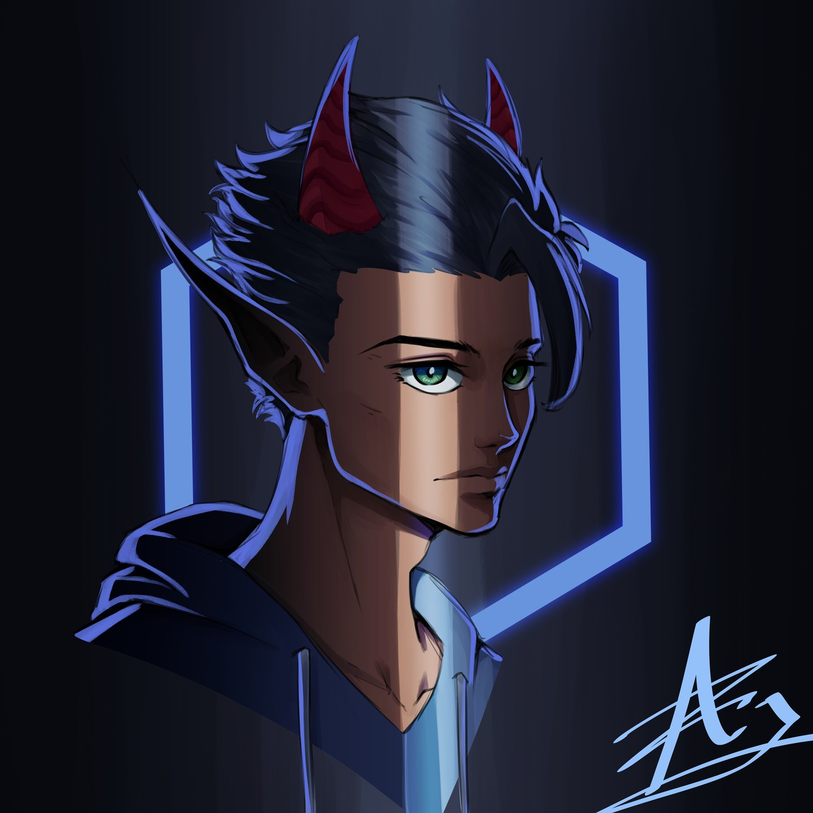

My name is Abdulaziz Malallah. I am 22 years old and I have a bachelor's degree in Visual Communication
I am a media producer for the Ministry of Information
My hobbies consist of gaming, reading, and drawing
My main hobby is drawing. I really enjoy the freedom and expressive nature of it. Below is an example of my art.
Getting into design was a natural progression from art for me. Below is a link leading to my portfolio.
Click here to view my portfolioDesign and art share many similarities, making it so getting better at one directly improves the other. I will list some examples, in no particular order, below.